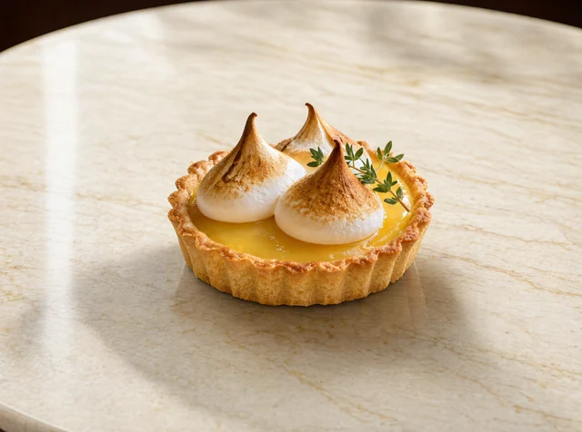
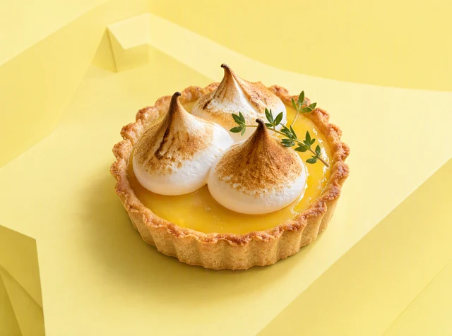

Food imagery / product campaign
Self-initiated portfolio workA lemon meringue tart, in two campaign settings.
I used a reference image of a lemon meringue tart to create two citrus-led advertising compositions. The two scenes show different ways to present the same dessert for a campaign.

Reference and use
The product reference sets the starting point: dessert presentation, lemon colors and serving context. The final scenes give a brand two compositions to develop into ads or campaign imagery.


A practical production workflow
For a client project, we agree on the product reference, intended channel, visual direction and image count. I develop the compositions, share them at the agreed review points and check product details against the source. After approval, I prepare the final files in the required formats.
A focused first assignment can cover one product, one visual direction, two or three final images and one agreed revision. Scope, fee and delivery plan are confirmed before production. I’m available for ongoing image production and larger batches.
Discuss food imagery ↗